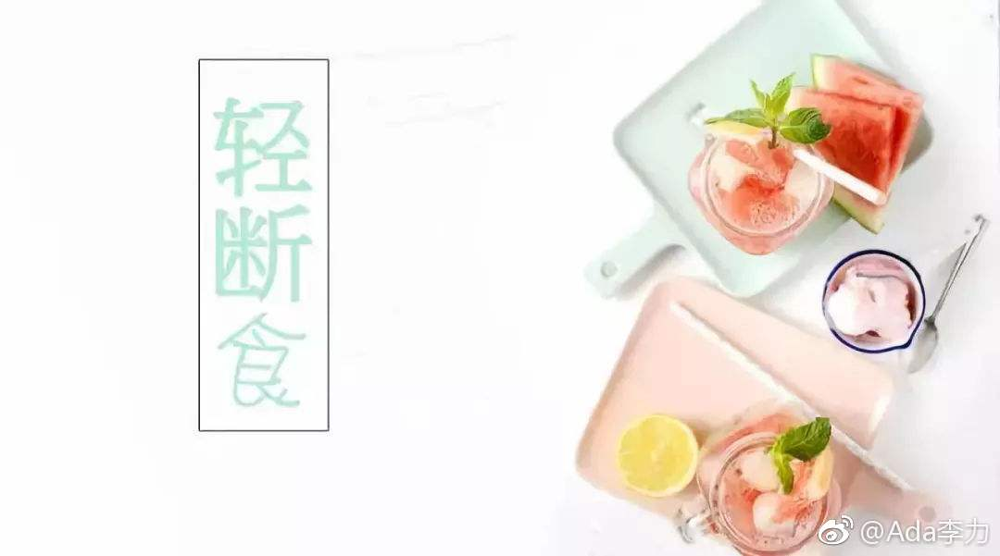

对5+2轻断食是不是有误解？
5+2轻断食并不是个快速的减脂方法，这里做个算术题就能够明白。比如我，如果保持体重不变，一天的热量摄入应该在1500大卡左右。那么轻断食日只允许摄入500大卡，一天就有1000大卡的热量差。一个月有8个轻断食日，一个月等于热量会整整少摄入8000大卡。
8000大卡换算成单独的宏量营养素素是多少呢？
1. 碳水化合物是2公斤。
2. 蛋白只是两公斤。
3. 脂肪889克。
所以5+2轻断食最理想的状况下是一个月体重能降低两公斤，这是按完全消耗了碳水化合物和蛋白质来计算的，如果你希望消耗的都是脂肪，就是不到1公斤。
想做到一个月减掉更多，5斤，8斤甚至10斤，这样的目标仅靠轻断食是不行的。必须配合饮食控制以及运动。但这样也就失去5+2轻断食的优势了。我本来就是冲着轻断食，简单，方便，不累，还能吃好吃的这些优点才去实践它的。
想用轻断食达到减脂目标的朋友们，可能还需要调整一下自己的期望值。它不是个快速的减肥方法，对有些人来说，可能也不是个适合的减肥方法。比如，有饮食障碍的，低血糖的，BMI低于22的人，都不建议采用5+2轻断食。在我看来，它更像是个帮助你去培养良好的饮食习惯的工具，是可以长期采用的一个工具。有时候大吃大喝后，想吃后悔药的补救工具。
5+2轻断食并不是个快速的减脂方法，这里做个算术题就能够明白。比如我，如果保持体重不变，一天的热量摄入应该在1500大卡左右。那么轻断食日只允许摄入500大卡，一天就有1000大卡的热量差。一个月有8个轻断食日，一个月等于热量会整整少摄入8000大卡。
8000大卡换算成单独的宏量营养素素是多少呢？
1. 碳水化合物是2公斤。
2. 蛋白只是两公斤。
3. 脂肪889克。
所以5+2轻断食最理想的状况下是一个月体重能降低两公斤，这是按完全消耗了碳水化合物和蛋白质来计算的，如果你希望消耗的都是脂肪，就是不到1公斤。
想做到一个月减掉更多，5斤，8斤甚至10斤，这样的目标仅靠轻断食是不行的。必须配合饮食控制以及运动。但这样也就失去5+2轻断食的优势了。我本来就是冲着轻断食，简单，方便，不累，还能吃好吃的这些优点才去实践它的。
想用轻断食达到减脂目标的朋友们，可能还需要调整一下自己的期望值。它不是个快速的减肥方法，对有些人来说，可能也不是个适合的减肥方法。比如，有饮食障碍的，低血糖的，BMI低于22的人，都不建议采用5+2轻断食。在我看来，它更像是个帮助你去培养良好的饮食习惯的工具，是可以长期采用的一个工具。有时候大吃大喝后，想吃后悔药的补救工具。
- 